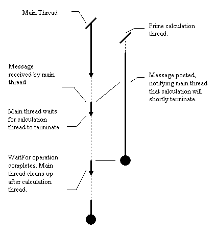
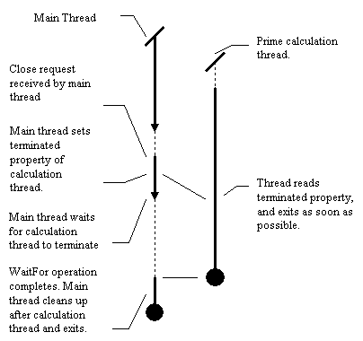
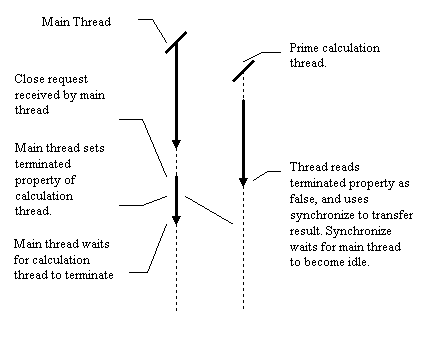

Chapter 5. More thread destruction. Deadlock.
In this chapter:
The WaitFor method.
OnTerminate, discussed in the previous chapter, is useful if you are using
threads in a "fire and forget" manner, with automatic destruction. What
if you have to ensure that, at a certain point in the execution of the
VCL thread, all other threads have terminated? The solution to this is
the WaitFor method. This method is useful if:
-
The main VCL thread needs to access the worker thread object after
its execution has finished, and read or modify data contained in the thread.
-
Force terminating threads upon program closure is not a viable option.
Quite simply, when thread A calls the WaitFor method of thread B, thread
A is suspended until thread B has finished executing. When thread A resumes,
it can be sure that results from thread B can be read, and that the thread
object representing B can be destroyed. Typically, this occurs at program
termination, where the main VCL thread will call Terminate on all the non
VCL threads, and then WaitFor all the non-VCL threads before quitting.
Controlled Thread
Termination - Approach 2.
In this example we will modify the prime number program code so that
only one thread executes at a time, and the program waits for the thread
to complete before exiting. Although, in this program, it is not strictly
necessary for the main thread to wait for other threads to terminate, this
is a useful exercise and demonstrates several properties of WaitFor that
are not always desirable. It also illustrates a couple of fairly subtle
bugs which might slip past thread programming novices. Firstly the
code for the main form. As you can see, there are several differences
from the previous example:
-
We have a "magic number" declared at the top of the unit. This is an arbitrary
message number, and its value is not important provided it is the only
message in the application with this number.
-
Instead of having a reference count of threads, we maintain an explicit
reference to one thread and one thread only, pointed to by the FThread
member variable of the main form.
-
We only want one thread to be executing at any one time since we only have
one member variable pointing to a worker thread. Consequently, the thread
creation code checks that we do not have a thread currently executing before
creating another.
-
The thread creation code does not set the FreeOnTerminate property to true.
Instead, the main VCL thread will free the worker thread later.
-
The main form has a message handler defined which waits for the worker
thread to complete, and then frees it.
-
Likewise, the code executed when the user wishes to close the form waits
for the worker thread to complete and frees it.
Having noted those points, here
is the worker thread code.Again, there are some small differences from
the code as presented in Chapter 3:
-
The IsPrime function now tests for thread termination requests, resulting
in a quick exit if the terminated property has been set.
-
The Execute function tests for abnormal termination.
-
If there is no abnormal termination, then it uses synchronize to display
the results, and posts a message to the main form, requesting that the
main form clean it up.
A quick intro to
message passing and lazy notification
In the normal case of affairs, the thread is executed, runs its course,
uses synchronize to display the results, and then posts a message
to the main form. This message posting is asynchronous: the main form picks
up this message at some point in the future. PostMessage does not
suspend the worker thread, it carries on through to completion. This is
a very useful property: we can't use synchronize to tell the main form
to free the thread, because we would then "return" from the Synchronize
call to a non-existent thread. Instead, it simply acts as a notification,
a gentle reminder to the main form that it should free the thread as soon
as possible.
At some later point, the main program thread receives the message, and
executes the handler. This handler checks that a thread exists, and if
it does, it waits for it to complete. This step is necessary because although
it is likely that the worker thread has run to completion (there aren't
many statements after the PostMessage), it is not guaranteed. Once this
wait has completed, the main thread can then clean up the worker thread.
The diagram below illustrates this first case. For the sake of simplicity,
the details of the Synchronize operation have been omitted from the diagram.
In addition, the call to PostMessage has been displayed as occurring some
time before the worker thread completes in order to illustrate the functioning
of the WaitFor operation.

Later chapters will cover the advantages of posting messages in more detail.
Suffice to say at this point that this technique is useful when interfacing
with the VCL thread.
In the abnormal case of affairs, the user tries to quit the application,
and confirms that he would like an immediate exit. The main thread sets
the terminated property of the worker thread, which will hopefully ensure
a reasonably swift termination, and it then waits for it to complete. Upon
completion, the cleanup proceeds as before. The diagram below illustrates
this second case.

Many readers may at this point be perfectly happy with the situation. However,
trouble lurks in the wings, and as is often the case when considering multi-thread
synchronization, the devil is in the detail.
WaitFor may result in
a long delay.
The benefit of WaitFor is also its biggest drawback: it suspends the main
thread in a state where it cannot receive messages. This means that the
application cannot perform any of the operations normally associated with
message processing: the application will not redraw, resize or respond
to external stimuli when it is waiting. As far as the user is concerned,
it appears that the application has hung. This is not much of a problem
in the case of normal thread termination; by making the call to PostMessage
the very last operation in the worker thread, we ensure that the main thread
will not have to wait long. However, in the case of an abnormal thread
termination, the amount of time the main thread spends in this state is
entirely dependent on how often the worker thread checks the terminate
property. The source for PrimeThread contains a line marked "Line A". If
the "and not terminated" is removed, then you can experiment with quitting
the app during the execution of a long thread.
There are some advanced methods of removing this dilemma involving the
Win32 message wait functions, and an explanation of this method can be
found by visiting http://www.midnightbeach.com/jon/pubs/MsgWaits/MsgWaits.html.
On the whole, it is simpler to write threads which check the Terminated
property on a regular basis. If this is not possible, then it is often
worthwhile displaying some form of warning to the user about the potential
unresponsiveness of the application (a la Microsoft Exchange.)
Have you spotted the bug? WaitFor
and Synchronize: An introduction to deadlock.
The delay that WaitFor incurs is a truly minor problem when compared with
the other vice it has. In applications that use both Synchronize and WaitFor,
it is entirely possible to make the application deadlock. Deadlock
is a phenomenon whereby no algorithmic error occurs in the application,
but the entire application is stopped, dead in the water. In the general
case, deadlock occurs when threads wait for each other in a cyclical manner.
Thread A may be waiting for thread B to complete some operation, whilst
thread C waits for thread D, etc. etc. At the end of the line, thread D
might be waiting for Thread A to complete some operation. Unfortunately,
thread A can't complete the operation because it is suspended. This is
the computing equivalent of the "A: You Go First ... B: No you ... A: No,
I insist!" problem that besets motorists when ownership of the right of
way is not clear. This behaviour is documented in the VCL help files.
In this particular case, deadlock can occur between the two threads
if the calculation thread calls Synchronize shortly before the main thread
calls WaitFor. If this occurs, then the calculation thread will be waiting
for the main thread to return to the message loop, whilst the main thread
is waiting for the calculation thread to complete. Deadlock will result.
It is also possible for the main VCL thread to call WaitFor shortly before
the worker thread calls Synchronize. Given a simplistic implementation,
this would also result in deadlock. Luckily, the VCL implementors managed
to trap this error case, which results in an exception being raised in
the worker thread, thus breaking the deadlock, and quitting the thread.

The programming of the example, as it stands, makes this fairly unlikely.
The worker thread only calls Synchronize if it reads the Terminated property
as false shortly before finishing execution. The main application thread
sets the terminated property shortly before calling WaitFor. Thus for deadlock
to occur, the worker thread would have to read the terminated property
as false, execute a synchronize, and then control would have to be transferred
to the main thread exactly at the point where the user has confirmed an
application force quit.
Despite the fact that in this case deadlock is unlikely, events of this
sort are clearly race conditions. It all depends on the exact timing of
events, which will vary from run to run and from machine to machine. 99.9%
of the time, a forced closure will work, and one time out of a thousand,
everything might lock up: exactly the sort of problem that needs to be
avoided at all costs. The reader may remember that I previously mentioned
that no large scale synchronization occurs when reading or writing the
terminated property. This property means that it is not possible to use
the terminated property to avoid this problem, as the previous diagram
makes clear.
The interested reader may wish to duplicate this deadlock problem. This
can be made relatively likely by performing the following modifications
to the source code:
-
Remove the "and not terminated" at Line A
-
Replace the "not terminated" at line B with "true".
-
Remove the comment on Line C.
Deadlock can then be provoked by running a thread whose execution takes
about 20 seconds, and force quitting the application shortly after the
thread is created. The reader may also wish to adjust the length of time
that the main application thread sleeps for in order to achieve the "correct"
ordering of events:
-
The user starts a calculation thread.
-
The user then tries to quit and says "Yes, I'd like to quit despite the
fact threads are running".
-
The main application thread goes to sleep (Line C)
-
The calculation thread eventually gets to the end of execution and calls
Synchronize. (Aided by modifications to lines A and B).
-
The main application thread wakes up from sleep and calls WaitFor.
Avoiding this particular
manifestation of deadlock.
The best method of avoiding this form of deadlock is not to use WaitFor
and Synchronize in the same application. WaitFor can be avoided by using
the OnTerminate event, as previously discussed. As luck would have it in
this example, the results that the thread returns are sufficiently simple
that we can avoid using Synchronize in an almost trivial manner. By using
WaitFor, the main thread can now legally access properties of the worker
thread after termination, and all that is needed is a "result" variable
to hold the text string produced by the worker thread. The modifications
required are:
-
The removal of the "DisplayResults" method of the thread.
-
The addition of an appropriate property to the worker thread.
-
The modification of the message handler in the main form
Here
are the relevant changes. This just about concludes the discussion
of mechanisms for synchronization common to all 32 bit Delphi versions.
I have not yet discussed two methods: TThread.Suspend and TThread.Resume.
These are discussed in Chapter 10. Further chapters explore the facilities
offered by the Win32 API, and later versions of Delphi. I would suggest
that, once the reader has got to grips with the Delphi threading basics,
he takes the time to study these more advanced mechanisms, since they allow
a good deal more flexibility than the native Delphi mechanisms, and allow
the programmer to co-ordinate threads in a more elegant and efficient manner,
as well as reducing the possibility of writing code that leads to deadlocks.
[Contents] [Previous][Next]
© Martin Harvey
2000.